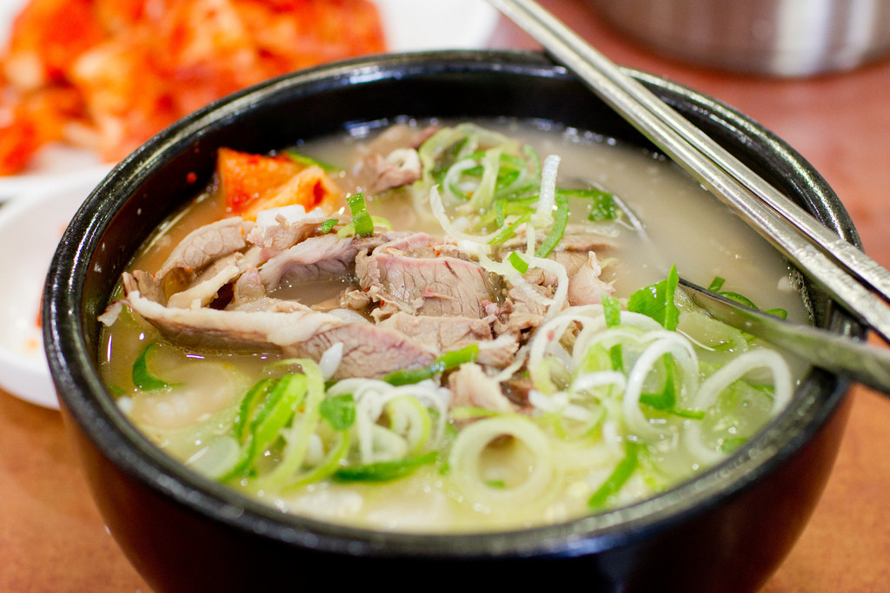

Seolleongtang

Description
Seolleongtang is a nutritious ox bone broth usually enjoyed during cold winters, either as a soup base or on its own.
Ingredients
- 3-4 Lbs Crosscut beef bones
- 1-2 Lbs Beef high in connective tissue (Brisket or Shank)
Instructions
- Soak bones in cold water to purge blood, about 1 hour. Do the same with the meat.
- Add bones to large stockpot. Add enough water to cover and bring to boil for five minutes.
- Drain and rinse bones of scum. Clean pot and add bones again.
- Fill pot with enough cold water to cover bones, bring to boil over high heat and reduce to light boil.
- Boil until broth becomes rich and creamy, at least 5 hours.
- Top off with water as needed.
- Add soaked meat and simmer until tender.
- Optionally, skim the fat and scum for a more refined flavor.
- Enjoy warm or freeze for later.